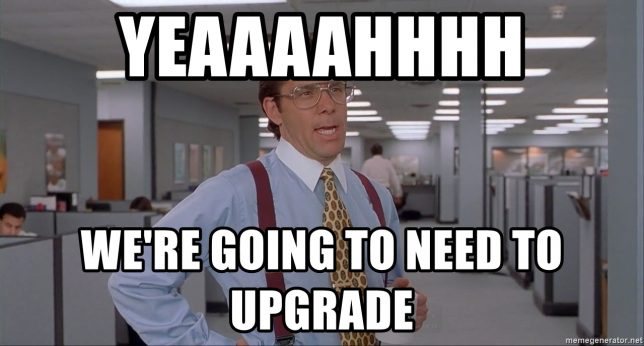
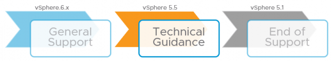

Fim do suporte ao vSphere 5.5 e agora?
Blog VMwareCompartilhe esse post nas redes sociais...
Olá Homelabers!
Hoje, dia 19/09/2018 marca a data do fim do suporte a versão 5.5 do VMware vSphere mas e agora?
Se você ainda não fez o upgrade do seu ambiente 5.5 para outras versões como 6.0, 6.5 ou 6.7, não precisa ficar MUITO preocupado.
E agora?

O seu ambiente não vai parar, suas VMs continuarão funcionando normalmente e tecnicamente nada muda. O único ponto é que se você precisar de suporte, não vai conseguir ajuda da GSS (Global Support Services).

Editado: 19/09 - 16:00 - O texto abaixo foi adicionado ao post para complementar as informações escritas por mim anteriormente. Fonte: https://blogs.vmware.com/vsphere/2018/09/end-of-general-support.html
A realidade do suporte ao vSphere 5.5
Os engenheiros de suporte são humanos, assim como nossos clientes, e há limitações para o conhecimento que uma equipe de técnicos pode manter em suas fileiras.
O vSphere 5.5 foi lançado em 2013 e, desde então, foram lançados mais três grandes lançamentos do produto. Muitos engenheiros de suporte entraram na era do 6.x e o volume do vSphere 5.5 tem diminuído constantemente durante os anos. Isso significa que pode ser difícil e demorado responder perguntas complexas sobre a linha de produtos 5.5. Além disso, quando o vSphere 6.x foi lançado, ele mudou bastante o jogo em termos de arquitetura e técnicas de solução de problemas. Isso é muito importante para o suporte a que se acostumam a ver quando ajudam os clientes e, à medida que o volume de casos do vSphere 5.5 diminui, o mesmo acontece com o conhecimento geral do suporte.
Orientação Técnica (Technical Guidance)
Primeiro, vamos esclarecer um equívoco comum sobre orientação técnica. Especificamente, isso não significa que o produto se torne imediatamente sem suporte. Eu ouço essa palavra muito usada para produtos fora da fase de suporte geral, mas é enganoso fazê-lo. O suporte VMware ainda ajudará no caso de um problema em um ambiente executando esses produtos. Há, no entanto, algumas limitações sérias para até onde isso vai agora que está fora do Suporte Geral. Muitas vezes, esses casos acabam exigindo uma atualização de qualquer maneira.
Fim do update
Contrato de Suporte:
Se você tem um Contrato de Suporte Válido mas por qualquer motivo ainda está rodando a versão 5.5 no seu ambiente, o que vai acontecer é que em caso de algum problema, a VMware não irá mais suportar o seu ambiente, o suporte será feito na base do melhor esforço e o suporte irá apenas apontar KBs existentes, mas você ainda poderá fazer o upgrade posteriormente.
Se você ainda não migrou e tem o suporte válido, planeje e execute a migração o quanto antes, para não correr riscos com um sistema sem suporte.
Se você NÃO tem um Contrato de Suporte Válido e quer fazer o upgrade, será necessário legalizar o seu ambiente, adquirindo uma nova licença + suporte e ainda pagar o retroativo do tempo que você ficou sem suporte.
Veja a informação descrita no site da VMware:
A orientação técnica para o vSphere 5.5 está disponível até 19 de setembro de 2020, principalmente por meio do portal de autoajuda. Durante a fase de Orientação Técnica, a VMware não oferece suporte a novo hardware, atualizações do sistema operacional do servidor / cliente / guests, novos patches de segurança ou correções de bugs, a menos que observado de outra forma. Para obter mais informações, visite as Fases de suporte do ciclo de vida do VMware.
Lista de produtos que alcançam o Fim do Suporte Geral em 2018
E não é só o vSphere 5.5 que tem o fim do suporte hoje, veja abaixo a lista de outros produtos afetados.
* AirWatch Console 9.1
* AirWatch Learn 1.0
* AirWatch Teach 1.0
* AirWatch Video for Android and iOS 1.0
* AppVolumes 2.11, 2.12 and 3.0
* **Cisco Nexus 1000V**
* **ESXi 5.5**
* Horizon DaaS Bundle and Horizon DaaS On Prem Platform 6.1
* Identity Manager 2.9
* Integrated OpenStack 3.0 and 3.1
* Mirage 5.8
* NSX for vSphere 6.2
* NSX-T 1.0 and 1.1
* SDDC Manager 2.0, 2.1 and 2.2
* Site Recovery Manager 5.5 and 5.8
* User Environment Manager 9.0 and 9.1
* **vCenter Server 5.5**
* vCenter Server Heartbeat 6.6
* **vCenter Update Manager 5.5**
* vCloud Availability for vCloud Director 1.0
* vCloud Director for Service Providers 8.10
* vCloud Usage Meter 3.5.0, 3.6.0 and 3.6.1
* vRealize Automation 6.2.5 Standard/Advanced/Enterprise
* vRealize Automation DevKit 6.2.2
* vRealize Automation 7.0, 7.1 and 7.2
* vRealize Business for Cloud 7.0, 7.1 and 7.2
* vRealize Code Stream 2.0, 2.1, 2.2 and 2.3
* vRealize Hyperic 5.8.4 through 5.8.6
* vRealize Log Insight 4.0, 4.3, and 4.5
* vRealize Network Insight 3.0 through 3.6
* vRealize Operations for Horizon 6.4
* vRealize Operations for Published Applications 6.1 and 6.4
* vRealize Operations Manager 6.3, 6.4, and 6.5
* vRealize Orchestrator 7.0, 7.1, 7.2, and 7.3
* **vSAN 5.5**
* vSphere Big Data Extensions 2.3
* **vSphere Data Protection 5.5 and 5.8**
* vSphere Data Protection Advanced 5.5 and 5.8
* vSphere Integrated Containers 1.x
* vSphere Replication 5.5, 5.6 and 5.8
* vSphere Storage Appliance 5.5
Para mais informações, consulte a Matrix de Ciclo de Vida dos Produtos VMware e leia esse post que eu publiquei aqui no blog, onde explico todo o ciclo de vida dos produtos VMware.
https://twitter.com/VMware/status/1042482976045637632
Deixe nos comentários como está a sua situação. Você já migrou seu ambiente? Está migrando? Não vai migrar?
Compartilhe esse post nas redes sociais...Valdecir Carvalho
Nerd e pai orgulhoso da Mariana e João. Profissional Sênior de TI com foco em arquitetura de infraestrutura e cloud computing. Blogueiro, podcaster, palestrante, amante de comunidades técnicas, fotógrafo aposentado e adora jogos antigos.
#vExpert · #VMUGLeader · #VUGBrasil · #vBronwBagBrasil · #VeeamVanguard